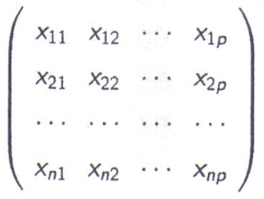
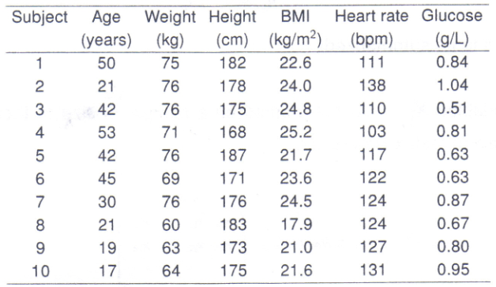
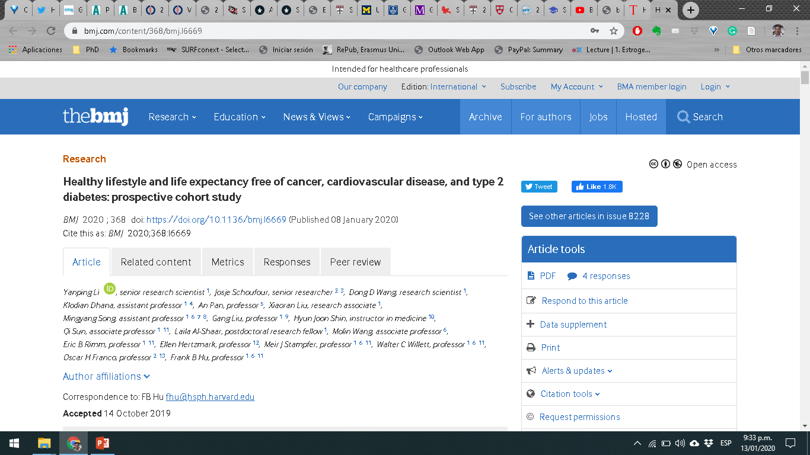
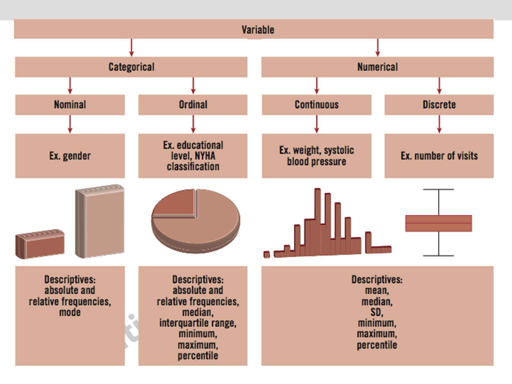
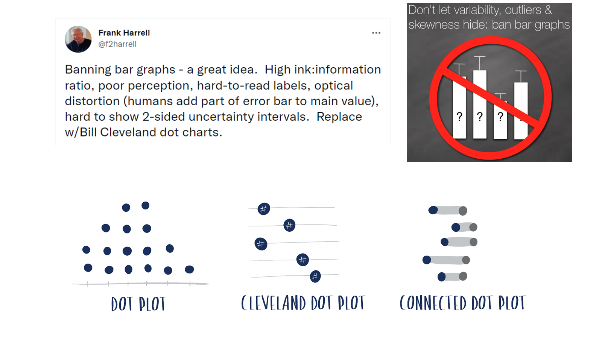
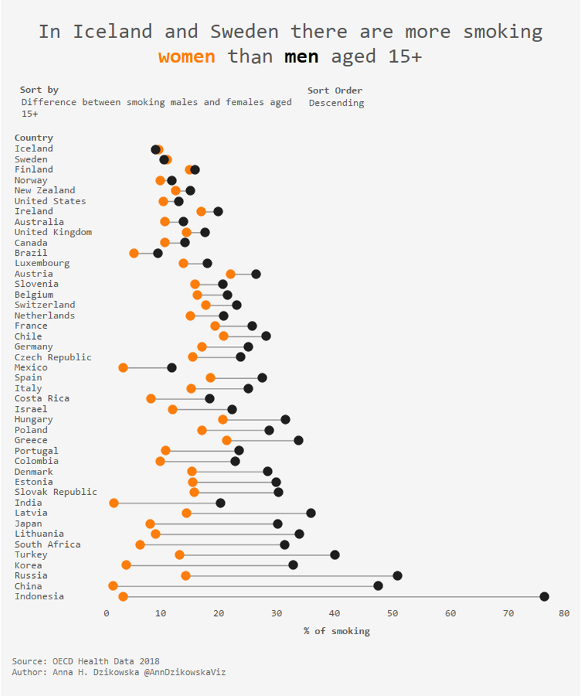
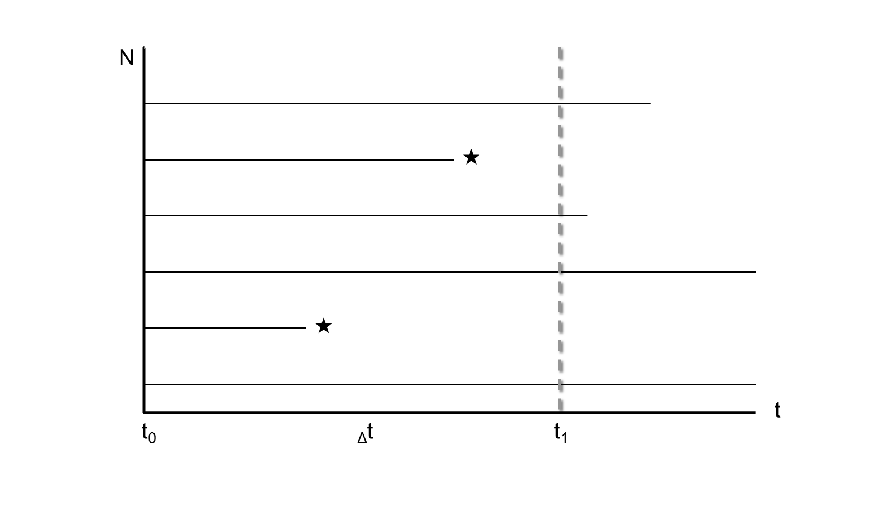
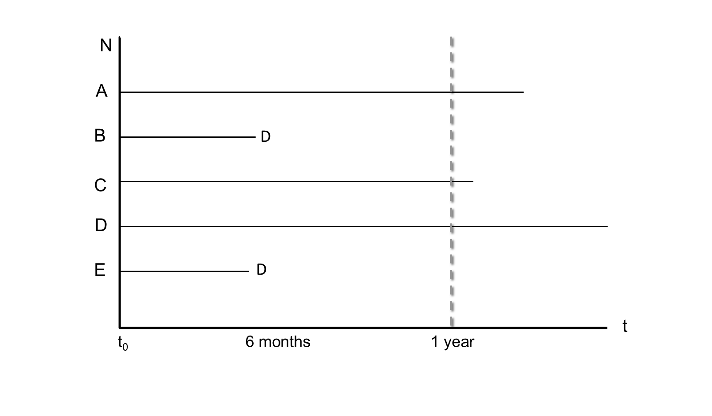
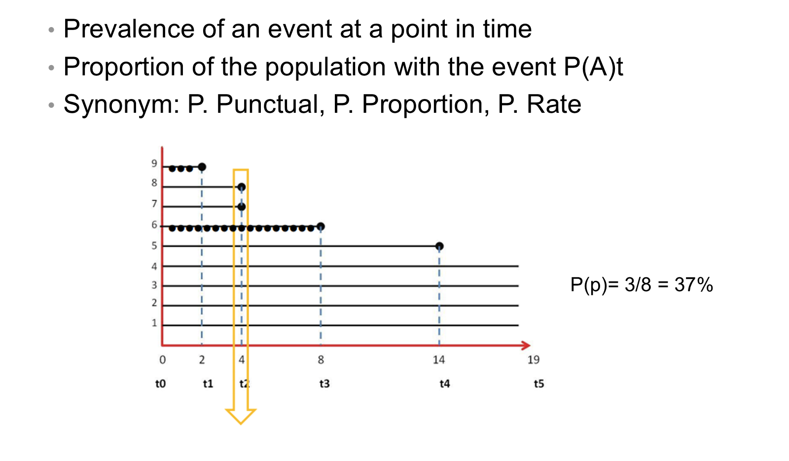
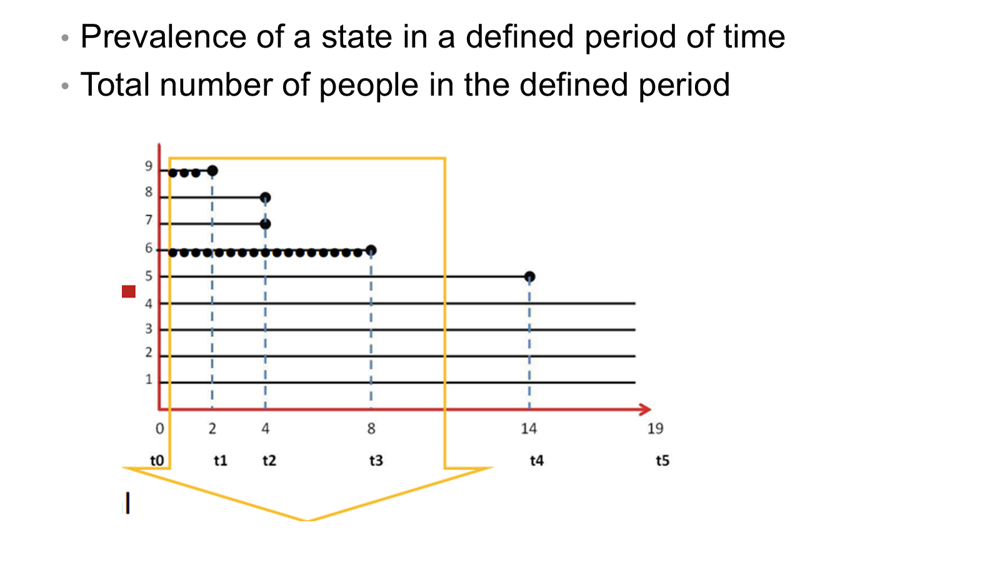

Reordering: could be transformed into a binary variable for each category
X1 = 1 if C1 is present, otherwise 0; X2 = 1 if C2 is present, otherwise 0; … Xn
Discrete (quantitative) variables
To express a numerical quantity
Usually calculated by counting or measurement
Discrete variables (counting)
They take a finite number of values (k) without decimals
Number of children at school
Number of medical consultations
Continuous (quantitative) variables
All possible real values in an interval or continuum — usually associated with a unit of measurement
Weight (kg); BMI (kg/m2)
Cholesterol level (mmol/L)
Survival time in a certain cancer (years, months)
Systolic blood pressure (mmHg)
How to summarize these variables?
Data
A single observation of a variable in the population
Data will be analyzed
Single value for BMI
Single value for weight
Single value for age
Data sample

n observations in n subjects (rows versus columns)
Data sample — example

Example: healthy lifestyle and life expectancy

Example — abstract (1/4)
Objective: To examine how a healthy lifestyle is related to life expectancy that is free from major chronic diseases.
Design: Prospective cohort study.
Setting and participants: The Nurses’ Health Study (1980-2014; n = 73,196) and the Health Professionals Follow-Up Study (1986-2014; n = 38,366).
Example — abstract (2/4)
Main exposures: Five low risk lifestyle factors: never smoking, body mass index 18.5-24.9, moderate to vigorous physical activity (≥30 minutes/day), moderate alcohol intake (women: 5-15 g/day; men 5-30 g/day), and a higher diet quality score (upper 40%).
Main outcome: Life expectancy free of diabetes, cardiovascular diseases, and cancer.
Example — abstract (3/4)
Results: The life expectancy free of diabetes, cardiovascular diseases, and cancer at age 50 was 23.7 years (95% confidence interval 22.6 to 24.7) for women who adopted no low risk lifestyle factors, in contrast to 34.4 years (33.1 to 35.5) for women who adopted four or five low risk factors.
Example — abstract (4/4)
At age 50, the life expectancy free of any of these chronic diseases was 23.5 (22.3 to 24.7) years among men who adopted no low risk lifestyle factors and 31.1 (29.5 to 32.5) years in men who adopted four or five low risk lifestyle factors. For current male smokers who smoked heavily (≥15 cigarettes/day) or obese men and women (body mass index ≥30), their disease-free life expectancies accounted for the lowest proportion (≤75%) of total life expectancy at age 50.
Example — conclusion
Conclusion: Adherence to a healthy lifestyle at mid-life is associated with a longer life expectancy free of major chronic diseases.
“Excellence in statistical graphics consists of complex ideas communicated with clarity, precision, and efficiency.”
Tufte — graphical displays should (1/2)
Show the data
Induce the viewer to think about the substance rather than about methodology, graphic design, the technology of graphic production, or something else
Avoid distorting what the data have to say
Present many numbers in a small space
Make large data sets coherent
Tufte — graphical displays should (2/2)
Encourage the eye to compare different pieces of data
Reveal the data at several levels of detail, from a broad overview to the fine structure
Serve a reasonably clear purpose: description, exploration, tabulation, or decoration
Be closely integrated with the statistical and verbal descriptions of a data set
Summary: variables, descriptives and graphs

Banning bar graphs

Dot plot example

Descriptive statistics / Describing data
To look slowly at the data
To discover trends
To show relationships
To what end?
To find the best approach to show it
To increase the comprehension of the data
To give utility to the data
Measures of Occurrence, Association and Effect
Measures of occurrence, association and effect
To describe the occurrence of an event of interest (X)
When we have two variables (X, Y) there is an interest in their degree of “association”
Measures of occurrence: risks, rates, incidence, prevalence
Measures of association:
Absolute: absolute risk and absolute risk reduction (ARR)
Relative: odds, relative risk, odds ratio, hazard ratio
Pearson linear “correlation” coefficient
Risk and basic measures of frequency
Risk: probability of an event occurring (illness, death…) — a measure of frequency and a measure of association
Basic measures of frequency
Incidence (incident or new cases): proportion or rate
Prevalence (prevalent or existing cases): point or period prevalence
Risk — Incidence

Risk — Cumulative incidence (CI)
\[CI = \frac{\text{Number of new events}}{\text{Total population at risk}}\]
It is a proportion (cases / total) — a fraction (%)
Represents risk (from 0 to 1)
Requires a time specification
It requires defining the “population at risk”
Absence of losses (complete follow-up)
Risk — Cumulative incidence: examples and uses
Examples
5-year mortality of patients diagnosed with lung cancer
Mortality within 30 days of ICU admission
10-year incidence of gastric cancer in general practitioners
Uses in health sciences: (absolute) risk — fatality, lethality, mortality, 5-year survival…
Risk — “Rate”
It is a measure of “how fast something happens”: 1 hour, 60 km → average rate = 60 km/h
Risk — Incidence rate (IR)
Incidence rate (velocity), event rate
It is a density — NOT a ratio or proportion
Allows risk estimation only indirectly
\[IR = \frac{\text{Number of new events}}{\text{Person-time free of the event}}\]
Definition: number of subjects presenting the event per unit of subject-follow-up time at risk of the particular event
CI versus IR

CI versus IR — calculation
Cumulative incidence (CI)
Incidence rate (IR)
CI = 2 / 5 = 0.4
IR = 2 / (3 + 0.5 + 0.5) = 2 / 4
Cumulative incidence of AMI at 1 year is 40%
Incidence rate of 0.5 per person-year (5 per 10 person-years)
IR (incidence rate) — example
5 new cases per 10 person-years
Interpretation:
On average, 5 new cases occur for every 10 years of observation in a cohort of disease-free subjects
Its interpretation is not easy to use for the prediction of risk at the individual level
It becomes useful at the population level or in research
Risk vs Rate
Cumulative incidence
Incidence rate
Proportion (0 – 1)
Describes how quickly new events occur in a population
Probability that an individual will develop the disease in a certain time
Useful in etiological comparisons (causality)
Used for individual prognosis
Low use at the individual level
Does not take into account situations such as loss to follow-up or competing risks
Can handle situations such as loss to follow-up or competing risks
Easy to quantify in small populations without major losses
Can be calculated in large populations or with losses during follow-up
Mortality
It can be expressed as cumulative incidence (proportion) or as a rate
Classification as a rate is used in vital statistics
\[MR = \frac{\text{All-cause deaths}}{\text{Population at risk}^{*}} \times 100{,}000\]
MR: mortality rate, with deaths and population at risk measured over the same period
*Population at risk at the middle of the period (year)
Risk — Prevalence
Existing cases / total population
Cases that are present
Proportion (%), ranges from 0 to 1
Point or period
Point prevalence

Period prevalence

Period prevalence (years 1 to 4): P(per) = 4/9 = 44%
Point / Period
Point prevalence: proportion of people experiencing the clinical event (case) at a given point in time. It is a cut at a given moment, in which the CASES are counted.
Period prevalence: proportion of cases. It includes those who fell ill in previous periods and who are still CASES (existing and new). Each person represented in the numerator had the disease at some point during the specified period.
Prevalence and incidence relationship
\[\text{Prevalence} = IR \times \text{duration of the disease}\]
*Only useful in cases of low IR
Prevalence depends on INCIDENCE
A high incidence produces a high prevalence if the duration of cases does not change
Prevalence depends on the DURATION of the disease (recovered, dead, migrated)
Incidence, prevalence and outflow
Gordis. Epidemiology, 4th Edition. Relationship between incidence and prevalence.
2 × 2 table
Outcome: Yes
Outcome: No
Total
Exposed
a
b
a+b
Non exposed
c
d
c+d
Total
a+c
b+d
a+b+c+d
2 × 2 table — frequency measures
Frequency measurements can be extracted:
CI (exp) = a / (a+b)
CI (non exp) = c / (c+d)
CI = (a+c) / (a+b+c+d)
Prevalence = (a+c) / (a+b+c+d)
Absolute association measures
Relative association measures: relative risk / CIR
Outcome: Yes
Outcome: No
Total
Exposed
a
b
a+b
Non exposed
c
d
c+d
Total
a+c
b+d
a+b+c+d
Relative risk / CIR — formula
The relative risk is a ratio of cumulative incidences — the cumulative incidence ratio (CIR):
Odds ratio — example (MacMahon et al., NEJM, 1981)
RR and OR interpretation (1/2)
Both indicate magnitudes of association
The RR is the ratio of two cumulative incidences (risks). As a direct risk assessment, it is appropriate to refer to the RR as “risk”
RR = 1.8: compared to the control group, the intervention group had a 1.8-fold increased risk of developing side effects
When interpreting the OR, it is preferable to speak of “times more likely” and avoid the term “risk”
OR = 1.8: compared to the control group, the intervention group was 1.8 times more likely to develop side effects
RR and OR interpretation (2/2)
When the outcome event is infrequent (< 10%), the OR and RR approach each other
When interpreting the clinical significance of an outcome expressed as an OR, it should be treated as an RR (most of the time)
Risk “vs” Odds
Effective Clinical Practice, May/June 2000, Volume 3, Number 3
Clarifying some concepts
What (exactly) is a risk factor?*
*Think in prediction versus explanation
Is caviar a risk factor for being a millionaire?
BMJ 2016;355:i6536 doi: 10.1136/bmj.i6536
The risk factor approach
The risk factor approach to epidemiology was introduced by the Framingham Heart Study investigators, who first alluded to the idea in 1951 and introduced it in 1961
The semantic confusion has hindered precise communication about study design and data analysis
You have a secretive friend, and among other questions, you are interested in knowing whether he is a millionaire. You are aware that there are some attributes, or risk factors, that are thought to be linked to being a millionaire
Four broad objectives of clinical research
Clinical research can generally be divided into four broad objectives based on the intended use of the information obtained by the study:
Diagnosis
Prognosis
Treatment effects
Aetiology
Objectives and definitions of risk factor
Therefore…
When conducting observational studies, data analysis needs to be designed to match the particular definition that is being considered
The definition of “risk factor” will vary depending on whether a research question is exploring diagnosis, prognosis, treatment effects, or aetiology
Unless a definition is specified, it is not possible for readers of research papers to understand what the investigators attempted to learn, or to evaluate whether they succeeded in their objectives